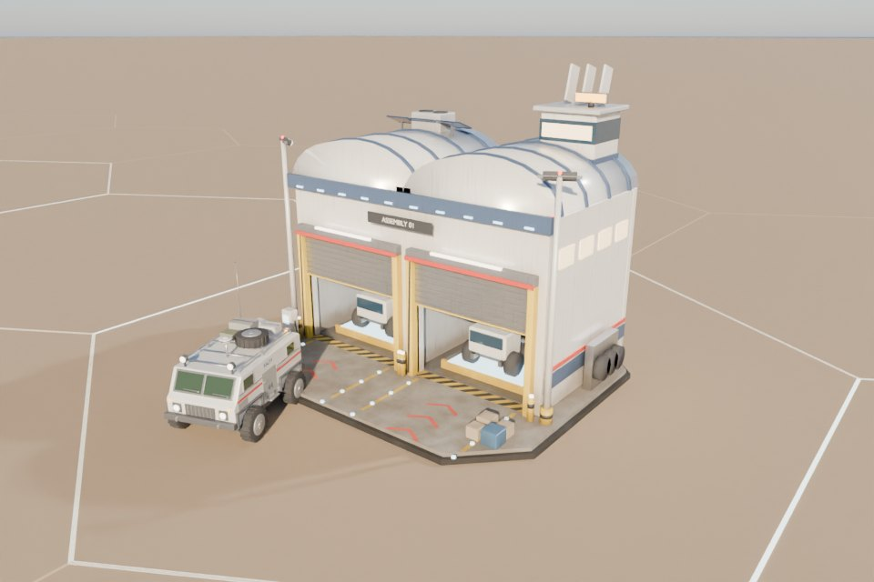

Three build-menu buildings that are still primitives in the game, the Vehicle Bay, the Research Lab and the Alloy Foundry, mocked up in Blender at five marks each. Every mark keeps the silhouette and the parts the game animates, stays inside the lane footprint, and is split into exocomp build pieces. The numbers for Mk IV and V are placeholders for balancing.
In data numbers from data/buildings/surface/ todayProposed new placeholder numbersRenders: Cycles, Federation look, desert stage, hexes 25 apart
Gates
What unlocks Mk IV and Mk V
Proposal: Mk II and III need only the mark before (as the refinery, mine and foundry do today). Mk IV needs a surface tech that a Mk III lab can research; Mk V needs a tech from a Mk IV lab. The upgrades cost the alloys a Mk IV and Mk V foundry make, so the foundry becomes the spine of the late game. On top of that, the match's era caps the highest mark.
Mk IV techs (Lab Mk III branch)
Automated Assembly 150 RP → Vehicle Bay Mk IV
Isolinear Data Cores 160 RP → Research Lab Mk IV
Transparent Aluminum 140 RP → Alloy Foundry Mk IV + its recipe
Mk V techs (Lab Mk IV branch)
Industrial Transporters 220 RP → Vehicle Bay Mk V
Positronic Research 240 RP → Research Lab Mk V
Plasma Conduit Fabrication 200 RP → Alloy Foundry Mk V + its recipe
Order it forces
Lab Mk III researches the Mk IV techs
Foundry Mk IV makes transparent aluminum
Lab and Bay Mk IV cost transparent aluminum
Foundry Mk V makes plasma conduits for the other Mk Vs
Era (eras.json)
Tech cap tier
Highest mark (proposed: tier + 2)
Mk V unit at the bay
Enterprise
1
Mk III
—
Discovery / TOS, Kelvin
2
Mk IV
—
Next Generation
3
Mk V
Faction heavy vehicle
Dominion War, Delta Quadrant (the MVP duel)
4
Mk V
Faction heavy vehicle
Picard, 32nd century
5–6
Mk V
Argo Ground Vehicle (Federation)
Large building card
Vehicle Bay, upgrading to Mk IV
The large card from the build menu, opened on a finished Mk III bay with U. Five level pips, the next one striped. The left side is the upgrade (what it costs and what you get), the right side explains the change and the whole ladder.
Vehicle BayMk III Motor Pool → Mk IV Twin Line· Production · Base 1
×

Mk IV previewDrag to turn
120 Parasteel/ 18430 Transparent Aluminum/ 42· 55 s upgrade
Lines1 → 2
Speed170%
Queue8 → 10
Power−8 → −12
The hall widens to two assembly lines under twin barrel roofs, each with its own door, so two vehicles are built at once. Exocomps rebuild it around the working bay: the line in use keeps going at half speed while the new hall goes up.
Automated Assembly researched · Dominion War era allows up to Mk V · Mk III finished
Upgrade [Enter]Close [Esc]
What Mk IV changes
Two lines: two orders build side by side (the queue feeds whichever line is free).
Each line 170% speed: a Mining Crawler takes 26 s instead of 45 s, two at once.
New order: Hover APC (troop carrier, once combat is in).
+100 storage for vehicle parts; power use 12.
Levels
Mark
Cost
Time
Lines × speed
Wear
Mk I
180 Dur · 60 Tri
30 s
1 × 100%
2/min
Mk II
150 Dur · 50 Tri
30 s
1 × 130%
1.5/min
Mk III
160 Dur · 40 Para
40 s
1 × 160%
1.2/min, drones
Mk IV
120 Para · 30 T.Al
55 s
2 × 170%
1.0/min, drones
Mk V
150 Para · 30 Conduits · 10 Dil
70 s
2 × 220%
0.8/min, drones
Orders at Mk IV
Vehicle
Cost
Time
Mk I Scout
60 Dur
12 s
Mining Crawler
150 Dur · 50 Tri
26 s
Mk II Surveyor
90 Dur · 20 Tri
18 s
Mk III Explorer
120 Dur · 60 Tri · 5 Dil
26 s
Construction Rover
120 Dur · 40 Tri
29 s
Hover APC new
placeholder
—
Next: Mk V Starfleet Motor Pool
Needs Industrial Transporters (Lab Mk IV branch) and plasma conduits from a Mk V foundry. Unlocks the Argo in the Picard era and a transporter pad that delivers finished vehicles to any of your bases.
Build-out
What it would take
Nothing here is wired into the game. The Blender scripts can export each mark as a game glb (--mark N --game → game/models/buildings/marks/); none are in the repo yet. A test export of the Mk IV bay came out at 0.6 MB, 5,650 triangles, 30 nodes (seven Build pieces, Door, Door1, WorkGlow, Spin, the variety spots and sign marker).
Data
levels gets Mk IV and V entries, and the bay and lab get Mk II and III (only the foundry, refinery and mine have levels today).
Vehicle Bay: Production served by N lines (two progress values), RollOut from the line's door.
Lab: a second active tech at Mk V (ActiveTech becomes a list of slots).
Foundry: recipes by level, plus the recipe pause/priority toggle the balance runner asked for.
Levels already change modifiers; they would also change power, storage and footprint (lanes re-plan round a grown building).
Models
One glb per mark (about 1–2 MB each, 15 for these three) loaded by BuildingModels.Build(id, owner, seed, serial, level); the primitive stand-in stays as the fallback.
Parts the code moves: bay Door + new Door1, WorkGlow, Spin; lab Spin (+ dish scan); foundry Spin, glows FurnaceGlow, TransparentAluminum, ScienceGlow per recipe.
Variety (Look) keeps working: same material names, AddOnSpot0..4, SignFront.
Exocomp upgrades
Every mark is split into the same seven named pieces (Foundation, Hall/Lab/Melt, Roof/Domes, Doors/Sensors, Control, Annex/Support, Lights).
Upgrade = for each piece, dissolve the old mark's version (the print effect run backwards), then print the new one; pieces that don't change are skipped.
Timing from the level's build_seconds, as for construction; the drones already fly for upgrades.
Interface
Level pips to five on the drawer tile, building panel and large card; the upgrade card above.
Locked marks say why (tech, era, previous mark) like the locked tile does.
Bay panel shows both lines' progress; lab card shows two project slots at Mk V.
Runtime thumbnails per mark (the cache key gains the level).
Five marks for every building, or only some? These three plus the refinery and mine feel right for five; storage, habitat and power might stop at three.
Upgrade in place or rebuild? Proposed: in place, exocomps swap the pieces while the building keeps working at half speed. Alternatives: offline while upgrading, or salvage and build the new mark.
Era gating: highest mark = era tier + 2 (Enterprise stops at Mk III, TOS at Mk IV)? Or tech gates only, with no era cap?
Should Mk IV and V cost the new alloys (transparent aluminum, plasma conduits), which makes the foundry the late-game spine?
Vehicle Bay twin lines: one queue feeding whichever line is free (proposed), or two queues you fill separately?
Lab Mk V: a second research project at once (proposed), or only more speed?
Footprint: all marks stay inside today's lane radius (bay 6.5, lab and foundry 7). Fine, or may a Mk V grow to the refinery's 8.5?
Mk V units by faction: Argo for the Federation in the Picard era; Klingon Assault Tank, Cardassian Patrol Skimmer and so on for the others?
Crew: the table proposes crew per mark, but no building uses crew yet. Add a crew cost, or leave it out?
Which first? Export one building's five marks to the game (the bay, since its animation contract is the clearest), or one mark of all three?